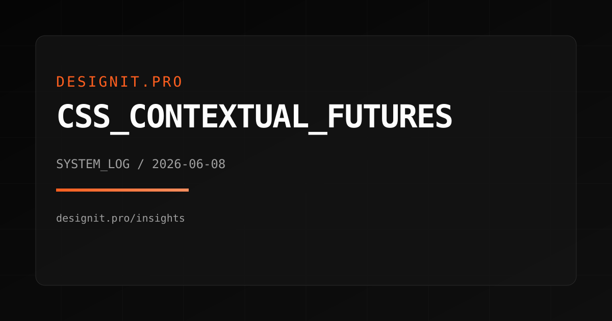

DIGITAL
ARCHITECTURE
& SYSTEMS.
{ Exploring the intersection of structural precision and digital aesthetics. Analysis, theory, and implementation strategies. }

CORE_DOMAINS
WEB_ARCHITECTURE
Analyzing modern design patterns. From component-based frameworks to atomic design methodology.
SYSTEM_INFRASTRUCTURE
Understanding the backbone of the internet. Cloud scalability, redundancy, and network protocols.
TRUST_AND_SECURITY
Identity, access, and data resilience. Build systems that survive real-world threats.
PERFORMANCE_SYSTEMS
Latency budgets, energy efficiency, and runtime observability across the stack.
CAPABILITY_MATRIX
Product vision, information architecture, and roadmap alignment that keeps teams moving together.
Interface systems, design tokens, and prototyping workflows built for speed and consistency.
Modern stacks, performance budgets, and scalable delivery pipelines that hold up under load.
Threat modeling, auth hardening, and data governance that protect the trust layer.
FEATURED_PROJECT
ATLAS_NETWORK
A multi-region routing stack rebuilt for resilience. We redesigned the edge logic, tuned the data plane, and cut user-facing latency without sacrificing observability.

PROCESS_LOGIC
DIAGNOSTIC
Analysis of current system constraints and architectural bottlenecks.
CALCULATION
Development of optimal pathways and redundancy strategies.
EXECUTION
Clean implementation with focus on semantic structure and performance.
ITERATION
Continuous monitoring and refinement based on user-flow data.
HARDENING
Security reviews, reliability drills, and performance validation before release.
LATEST_INSIGHTS
CSS_CONTEXTUAL_FUTURES
Component-aware CSS is rewriting the rules of responsive design. Learn how container queries, modern selectors, and cascade layers unlock truly modular systems.

FUTURE_OF_CSS
From container queries to :has(), CSS is becoming context-aware. Components
finally adapt to their own space.
SERVER_REDUNDANCY
Resilience is choreography: failure domains, automated failover, and graceful degradation.
READ ARTICLE >DESIGN_SYSTEMS
Design systems as decision pipelines. Tokens, governance, and accessibility baked in.
READ ARTICLE >ALGO_EFFICIENCY
Algorithmic performance: render budgets, virtualization, and background work for smooth UI.
READ ARTICLE >GREEN_COMPUTING
Every byte costs energy. Lean delivery, caching, and sustainable runtime choices.
READ ARTICLE >DATA_SOVEREIGNTY
Architecting for residency, encryption, and local-first trust in a regulated world.
READ ARTICLE >JWT_SECURITY
Claims validation, key rotation, and defense-in-depth for safer auth systems.
READ ARTICLE >DEV_LIFEHACKS
SSH discipline, shell leverage, and workflow shortcuts that compound over time.
READ ARTICLE >SYSTEM_LOG
SHIP A STRONGER SYSTEM
Tell us where performance, security, or UX is breaking down. We'll map a plan and execute with precision.